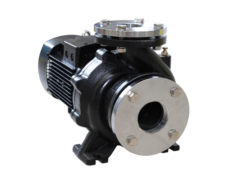

Моноблочний відцентровий насос, призначений для подачі води в системах кондиціонування повітря, спринклерного зрошення, тиску нагнітання, системах пожежогасіння, сільськогосподарського застосування, тощо. Розроблений для перекачування чистих рідин без абразивних частин, без твердих частинок у зваженому стані, не вибухонебезпечних та не агресивних для матеріалів насоса.
Виготовлений відповідно до міжнародних стандартів EN 733 - DIN 24255. Корпус насоса з антикорозійним покриттям, оцинкований контрфланець з болтами, гайками та прокладками. Якісний підшипник NSK, зносостійке механічне ущільнення. Ізоляція класу F та захист IP 55.
